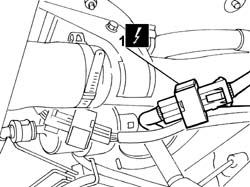
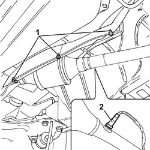

1080B90 LAMBDA PROBE R R
- Path
- Procedures > 10 ENGINE UNIT > 1080 EXHAUST EMISSION CONTROL SYSTEM > 1080B EXHAUST EMISSION CONTROL SYSTEM > 1080B90 LAMBDA PROBE R R
- Kind
- repair procedure (removal / refitting; the operation number is the code)
- Applies to
- engines: 2.0 16V; all production periods
- Interactive page
- https://sloeber94.github.io/elrnDB-fDct/en/#/244000890
Applies to: engines: 2.0 16V; all production periods
 Removing
Removing
 Refitting
Refitting- Position the vehicle on the lift.
- Disconnect the negative battery terminal.
- Raise the vehicle.
1. Disconnect the electrical connection for the Lambda sensor.

Applies to: engines: 2.0 16V; all production periods
1. Act on the plastic springs fastening the electrical cable to the exhaust pipe heat shield.
2. Undo the Lambda sensor and remove it.

Applies to: engines: 2.0 16V; all production periods
Refitting
Removing- Position the Lambda sensor and tighten it.
- Position the electrical cable and close the plastic fastening bands.
- Connect the electrical connection for the Lambda sensor.
- Lower the vehicle.
- Connect the negative battery terminal.